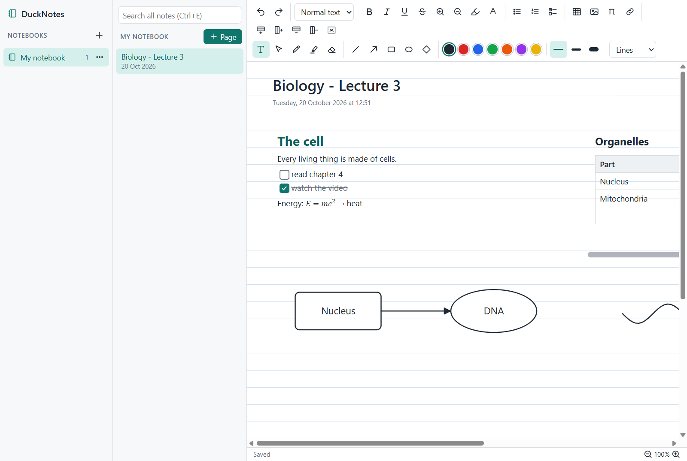

DuckNotes
Note-taking made for lectures. It works like OneNote, but your notes stay on your own computer: each notebook is a folder in Documents\DuckNotes, and pages save as you type.
Windows may say Windows protected your PC
, because the installers aren't code-signed (that costs money every year). Click More info, then Run anyway. After that the apps keep themselves up to date.

// what it does
An endless page
Click anywhere and write. Move text boxes around, make them wider, zoom with Ctrl+scroll wheel.
Lecture slides
Add a PDF of the slides and write and draw right on them.
Pictures
Ctrl+V pastes a picture where you last clicked, or drop picture files onto the page.
Drawing
Pen, highlighter and eraser over the whole page; boxes, circles and arrows that stay attached.
Select and move
With the select tool, drag a rectangle over things to move, recolour or delete them together.
Quick writing
# for a heading, - for a list, [] for a checklist, $x^2$ for an equation, -> for an arrow.
Tables and equations
Tables from the toolbar, Tab to the next cell; typeset maths with a preview.
Search
Ctrl+E searches every notebook and marks what it finds.
// keys
| Ctrl+N | New page |
| Ctrl+E | Search all notes |
| T V P H E | Type, select, pen, highlighter, eraser |
| L A R O D | Line, arrow, box, circle, diamond |
| Ctrl+drag | Move the view |
| Alt+= | Equation |
// help
Something not working, or missing? Tell us on GitHub. DuckNotes is free and open source: see the code.